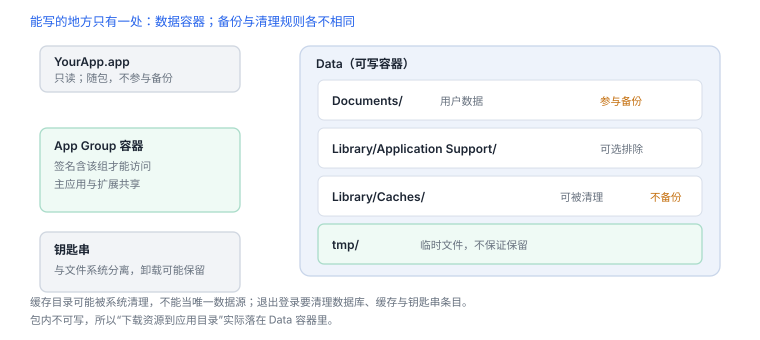

文件系统、容器与数据边界
能写的地方只有一处，能读的地方取决于保护类
iOS 的文件边界由三件事共同决定：容器布局（写到哪）、文件保护类（锁屏能不能读）、备份策略（会不会被带走）。三者都能量化，也都能在自有设备上验证。
1. 目录布局
| 位置 | 可写 | 备份 | 用途 |
|---|---|---|---|
YourApp.app | 否 | 随包 | 可执行文件与资源 |
Documents/ | 是 | 是 | 用户数据 |
Library/Application Support/ | 是 | 是 | 应用状态，可主动排除备份 |
Library/Caches/ | 是 | 否 | 可重建缓存，空间紧张时被清理 |
tmp/ | 是 | 否 | 临时文件，不保证保留 |
| App Group 容器 | 是 | 视配置 | 主应用与扩展共享，需签名能力 |
写在包内的东西在运行期不可修改：任何“下载资源到应用目录”的方案，最终都落在数据容器里。
2. 文件保护类
| 保护类 | 密钥可用条件 | 后台任务能否读 |
|---|---|---|
| 完全保护 | 设备已解锁 | 不能 |
| 仅解锁时（已打开） | 解锁后可继续访问已打开文件 | 有限 |
| 首次解锁前不可用 | 本次启动解锁过一次 | 能 |
| 无保护 | 始终 | 能 |
写入时指定保护类
let url = documents.appendingPathComponent("token.bin")
try data.write(to: url, options: [.atomic, .completeFileProtection])锁屏后读取“完全保护”文件会返回权限错误（EPERM），而不是“文件不存在”。把两者混为一谈，会写出错误的降级逻辑。

3. 观测容器
模拟器中定位容器并查看布局
xcrun simctl get_app_container booted com.example.app data
du -sh "$(xcrun simctl get_app_container booted com.example.app data)"/*
find "$(xcrun simctl get_app_container booted com.example.app data)" -name "*.sqlite" -maxdepth 3真机上无法直接读容器路径，但可以让应用把关键路径与文件大小写进日志，或用调试构建导出。
4. 备份与清理
- 大文件与可重建数据应排除备份，避免占用用户云空间。
- 退出登录要清理的不只是内存：数据库、缓存、钥匙串条目都要覆盖。
- 缓存目录可能被系统清理，不能当作唯一数据源。
5. 失败分流
| 错误 | 含义 | 查哪里 |
|---|---|---|
ENOENT | 路径不存在 | 目录是否创建、容器是否被清理 |
EACCES | 权限不足 | 沙盒边界、App Group 能力 |
EPERM | 策略拒绝 | 文件保护类与锁屏状态 |
ENOSPC | 空间不足 | 缓存是否无上限增长 |
两种拒绝不同
EPERM 是策略（保护类、锁屏），EACCES 是沙盒或能力；按同一个分支处理会把“稍后重试”和“没有权限”混为一谈。6. 一次真实排查记录：锁屏后写入失败
- 现象：前台正常，锁屏后后台任务写文件失败。
- 先看错误码：是
EPERM（策略拒绝）而不是ENOENT。 - 查保护类：目标文件标了“完全保护”，锁屏时密钥不可用。
- 改策略：需要后台访问的数据降到“首次解锁后可用”，并评估敏感度。
- 结论与限制：记录“保护类与访问时机不匹配”，并注明降级会带来安全权衡。
把 EPERM 当成“文件不存在”去重试，是这类问题最常见的错误处理。
7. 工程权衡：三个目录怎么选
| 目录 | 保证 | 不该放什么 |
|---|---|---|
| Documents | 备份、用户可见语义 | 可重建的大文件 |
| Application Support | 备份、可排除 | 敏感明文凭据 |
| Caches | 不备份、可被清理 | 唯一数据源 |
判断标准只有两个：丢了会不会影响用户，和丢了能不能重建。两个问题答完，目录就定了。
8. 自测
- 为什么应用包目录在运行期不可写？这对热更新方案意味着什么？
- 锁屏后读文件返回
EPERM与ENOENT，分别说明什么？ - 哪些目录需要主动排除备份？为什么？